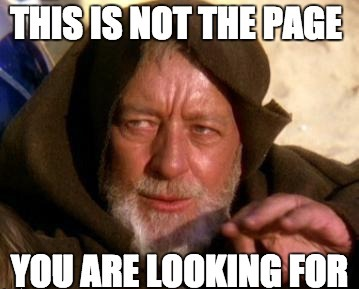

Page not found :(
The requested page could not be found. But hey, on the upside, a cool 404 page you have found! :D
PS. So, just in case you didn't get the joke, the image is from the Star Wars movies, and shows Obi Wan Kenobi using a Jedi mind trick, which basically means that whomever he was talking to would believe what he just said. I thought it'd make a cool 404 page!